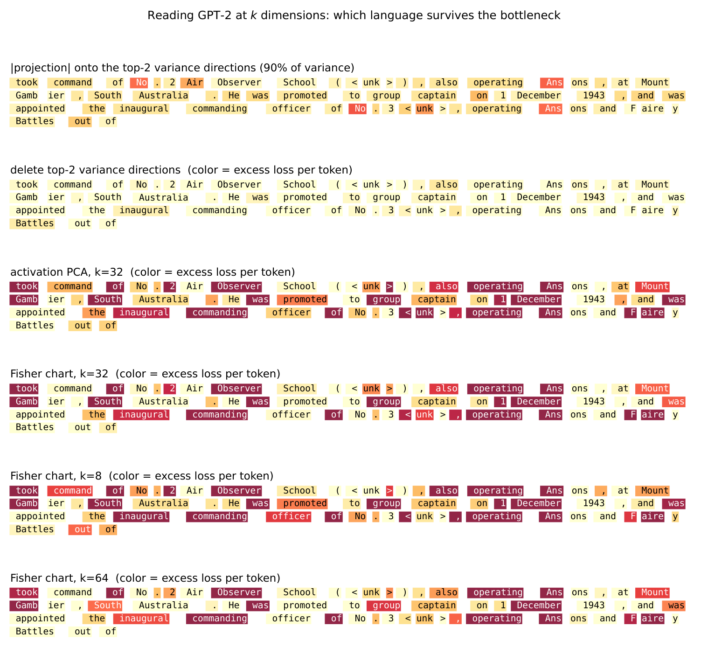
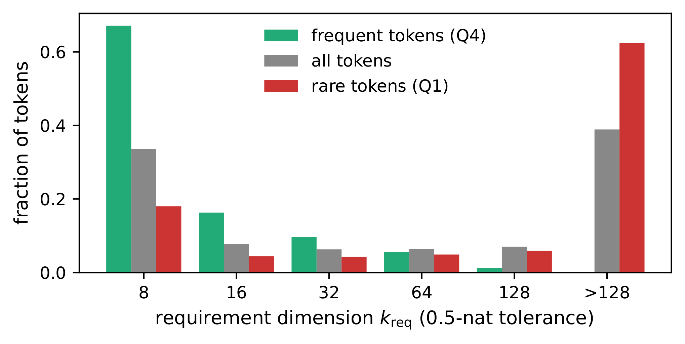
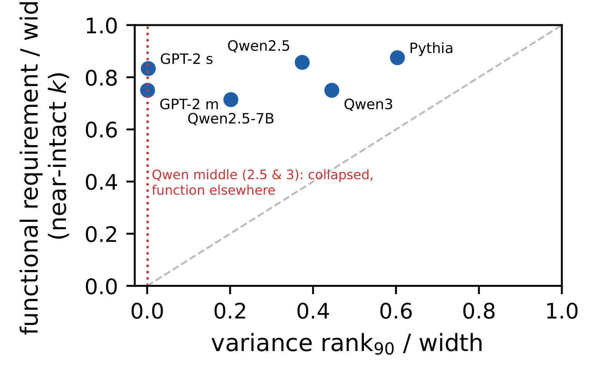

Two directions carry 90 percent of the activation variance in GPT-2’s last hidden layer. Delete both, and the model’s predictions barely move: 0.018 nats of extra loss, invisible on real text. Now do the opposite. Keep the top principal directions holding 99 percent of the variance, and perplexity explodes from 29.3 to 269. Almost all of the variance is function-free, and almost all of the function lives in the variance tail. In this article, I explore that dissociation, its causal confirmation, and its replication in six models across three families up to 7B. It summarizes a paper of ours on GPT-2’s computation, currently in submission. We will link it when it is public.
Why this matters beyond one model¶
When researchers look inside a model, variance is usually the first ruler they reach for. PCA truncation keeps the top-variance directions, represented by the eigenvectors of the activations’ covariance matrix. The percentage of variance a direction explains is its associated eigenvalue, normalized by the sum of all eigenvalues. Compression papers report “95+ percent of variance retained”. Probes are fitted on leading principal components. The frontier labs are no exception. The feature dictionaries behind current interpretability work at Anthropic are trained to reconstruct activations under plain squared error (Lindsey et al., 2025). The field’s standard benchmark evaluates whole families of such reconstruction-trained dictionaries (Karvonen et al., 2025). And recent probing studies ask what those same features can read out (Kantamneni et al., 2025). Every one of these tools assumes that big directions matter and small ones are noise. The measurement below says the assumption fails where it counts: in a language model’s hidden state, the directions that carry the answer are small, and the huge ones are almost inert.
One word needs pinning down first: function. By the function of a hidden state we mean what the model computes from it. In this article that is one concrete thing: the probability distribution over the next token that the head reads out of the state. When we say the function lives in some directions, we mean the readout actually depends on them: change them and the prediction changes, delete them and it breaks. The choice of readout matters. A state supports many readouts, and each can need a different number of directions. Reading the model’s own uncertainty, for example, turns out to be a far smaller ask than reproducing its full next-token distribution. Everything in this article grades against the full distribution, the model’s actual output.
A standard summary can point at the wrong thing entirely. We met one case already: the dimension of an embedding table, where the usual global estimate overstates the real, local dimension 2 to 5 times. This article is another example where standard analysis fails. In the hidden state, the most standard summary of all, variance, misses the function almost completely. We have measured the same split on embedding tables too, and those results will be published separately.
An illustration on real text with GPT-2¶
The fairest way to show the result is on an actual passage, token by token. For each token, the model assigns a probability to it given the text before it. An intervention on the hidden state changes that probability. We color each token by its extra loss: how much the log-probability of the correct token drops, in nats, between the intact model and the intervened one. Pale means unharmed while dark red means destroyed.

The second row is the most important. Ninety percent of the variance is gone, and the text reads fine. The third row keeps 99 percent of the variance and kills every content word, while the function words survive. Variance measures size, and size is not the same thing as use.
The two dominant directions themselves are not news. They are the rogue dimensions and narrow cones documented across contextual models (Ethayarajh, 2019, Timkey and van Schijndel, 2021). What is new is the direct measurement of what they carry.
Three details for the careful reader, because each rules out an easy explanation. First, the principal directions come from centered PCA: we subtract the mean state before computing them, so the top directions carry real variance, not the constant offset. Second, deleting a direction means mean-ablation: along that direction, every state is moved back to the average state. Third, the state we intervene on is the one the unembedding actually reads, after GPT-2’s final LayerNorm. Nothing stands between the intervention and the logits, so normalization cannot quietly undo our deletions. In particular, the 90 percent concentration is a property of the already-normalized state. LayerNorm had its chance, and these directions survived it.
The ruler that works: a Fisher metric through the head’s Jacobian¶
If variance is the wrong ruler, what is the right one? Ask the model. Everything GPT-2 does with a layer-11 state \(h\), a vector of 768 numbers, passes through the head: logits \(\ell = W_U h\), then probabilities \(p = \mathrm{softmax}(\ell)\). This is exact rather than shorthand: \(h\) is the state after the final LayerNorm, so the head’s Jacobian really is \(W_U\).
Our instrument for measuring the state is a chart: a pair of maps \(\hat h = D(E(h))\), where the encoder \(E\) compresses the state to \(k\) coordinates and the decoder \(D\) rebuilds it. PCA is the simplest linear example: project onto the top eigenvectors and back. Ours are IGL charts (Quemy, 2026): learned dictionaries fitted by two-stage variable projection, where the coordinates come from a closed-form least-squares solve. They are trained Matryoshka style (Kusupati et al., 2022), with the coordinates nested by importance, so one trained chart can be read at any budget \(k\).
Everything a chart preserves is decided by which errors \(\delta = \hat h - h\) it is trained to avoid. Plain reconstruction minimizes the squared length \(\lVert \delta \rVert^2\), which treats all 768 directions as equally important. Under a budget of \(k\) coordinates, that objective spends the budget where the states spread the most. For linear charts the optimum is exactly PCA: keep the top-variance directions, and the error that remains is the sum of the variances of the directions you dropped. Minimizing squared error and maximizing captured variance are the same act. That is how a method ends up chasing variance.
The right ruler measures a step \(\delta\) by how much it moves the answer: the KL divergence between \(p(h)\) and \(p(h + \delta)\). For small steps, that divergence is a quadratic form in \(\delta\):
Read \(G(h)\) from the inside out. The middle factor is the Fisher information of the softmax. It says how sensitive the output probabilities are to each logit. The outer factor \(W_U\) is the head’s Jacobian, the matrix that converts state changes into logit changes. Sandwiching the Fisher between \(W_U^\top\) and \(W_U\) carries the output’s notion of distance back onto the state space. That operation is called a pullback. Averaging the middle factor over states gives one fixed metric \(G\) for the whole layer.
In the real model this happens in 768 dimensions. The head reads the horizontal axis strongly and the vertical axis barely, while the state cloud puts 96 percent of its variance on the vertical. The two rulers then disagree about what “small” means. To the plain norm, every step on the grey circle is the same. To the pullback, the equal steps are the blue ellipse, stretched about nine to one along the quiet axis. GPT-2’s layer 11 is this picture with 766 more axes and a harsher ratio.
The metric is also easy to use. You do not need a new training method to fit a chart under it. Transform every state once, \(\tilde h = G^{1/2} h\), a step known as whitening, and train an ordinary chart on the transformed states with plain squared error. That error is exactly the metric’s error on the original state: \(\lVert G^{1/2}\delta \rVert^2 = \delta^\top G\, \delta\), which is twice the KL divergence, to second order. So the ordinary recipe, pointed at transformed data, minimizes the right thing: how far the compressed state’s answers drift from the intact model’s answers. The “task-weighted chart” measured later in this article is built exactly this way. It uses the same fitting procedure as a reconstruction chart, run in the metric \(G\) instead of the plain one.
Which part of \(G\) does the work? The metric has two ingredients: the head’s Jacobian \(W_U\), and the softmax factor \(\mathrm{diag}(p) - p\,p^\top\). Remove the softmax factor and the metric becomes \(W_U^\top W_U\). That version measures how much a step moves the logits, all 50,257 of them counted equally. It sounds reasonable and it fails: charts trained under it at k = 32 land at perplexity 512 (spread 61 across seeds), far behind the Fisher chart’s 184 (spread 17). The reason is saturation. At any given position, almost every token in the vocabulary has probability near zero. Moving a dead token’s logit changes nothing in what the model says, yet the plain metric spends the chart’s capacity on exactly those directions. The softmax factor weights each logit by the probability behind it. That concentrates the target on the few directions that matter, and the target becomes learnable. The effect is not a tuning accident: even blending the Fisher metric partway toward the plain one degrades the chart, to 221.
The causal check¶
The metric makes a prediction we can test. If the function lives where \(G\) is large, then pushing the state along a top direction of \(G\) must change what the model says next. Pushing along a top-variance direction must change almost nothing, however big that direction looks. Steering tests exactly this.
In GPT-2 the hidden state is a residual stream: one vector \(h\) of 768 numbers that every block reads from and writes to by addition, \(h \leftarrow h + \mathrm{block}(h)\). The state we study is that stream after the last block and after the final normalization: exactly the vector the head reads. Steering means writing into it ourselves. Pick a unit direction \(u\) and replace the state by
then let the model finish its prediction from \(h'\) instead of \(h\). We score the movement as the KL divergence between the intact output \(p(h)\) and the steered output \(p(h')\), averaged over eight directions of each kind and 640 positions of held-out text. Every push has the same length \(\varepsilon\), 5 percent of the typical size of a state, so all directions compete on equal footing. Only the direction \(u\) changes.
Three choices of \(u\), one number each. A random direction moves the output by 0.56 nats. That is the baseline. The two top-variance directions, which carry 90 percent of the variance, move it by 0.12 nats, five times less than random. The top directions of \(G\) move it by 6.0 nats: more than ten times the baseline, and fifty times the variance directions.
The ordering is the finding. The metric’s directions steer the model hard, as predicted. The variance directions are quieter than directions picked blindly. If the next-word computation read what those big directions store, a push along them would show up in the output. It does not.
One could object that the ordering is baked in: the top directions of \(G\) maximize the very quadratic form that approximates KL at small steps. So we also pushed four times harder, far past where the quadratic approximation holds. The three numbers become 45.2, 11.5, and 1.7 nats. Same ordering, and the variance directions still lose to random by a factor of seven.
The same ruler at every depth¶
Everything so far reads the state through the head, and that is correct only at the last layer. A middle layer’s state is not consumed by the head. It is consumed by the remaining blocks first, and those blocks amplify directions the head alone would ignore. The measurement agrees: at layer 6, a metric built as if the head read the state directly loses to plain PCA.
The fix is one more pullback (I know, it sounds like a meme!). A small step \(\delta\) at layer \(L\) arrives at the final layer, to first order, as \(J\,\delta\), where \(J\) is the Jacobian of all the remaining blocks together. So the right metric at layer \(L\) is the same Fisher, pulled back one stage further: \(\bar G_L = \mathbb{E}\lbrack J^\top G\, J \rbrack\), averaged over positions. We estimate it with random probe vectors, one backward pass of the model each.
The widget shows the mechanism with one remaining block. On the left is a probe step at the middle layer. Judged there by the head alone, a vertical step looks harmless, because the head barely reads the vertical axis. On the right is the same step after the block, which is what the head actually receives. The block stretches vertical steps onto the axis the head reads loudest. Set the probe vertical and compare the readouts. The head-alone prediction is close to zero. The true movement is hundreds of times larger, and the metric pulled back through the block predicts it correctly.
Does the trick work in the real model? Two checks say yes.
First, a correctness test. To see what it proves, look at how the estimator works. Factor the head metric as \(G = A^\top A\), with \(A\) its matrix square root. \(A\) is computed once from data and then held fixed, so the backward pass treats it as a constant. Draw a random vector \(u\) with independent unit-variance entries, form the scalar \(s = u^\top A\, h_{\mathrm{final}}\), and backpropagate \(s\) down to the layer-\(L\) state. That single backward pass returns the gradient \(g = J^\top A^\top u\). Now average the outer product over many draws:
because \(\mathbb{E}\lbrack u\, u^\top \rbrack\) is the identity. The randomness cancels exactly in expectation. Nothing about the network is approximated, so the only error left is that we average finitely many probes. The last layer turns this into a test. There the tail is empty and \(J\) is the identity, so the average must come back as the analytic \(G\) itself, a matrix we can compute in closed form with no sampling at all. We ran the full probe machinery anyway and compared the two matrices as a whole. They agree to within 2.5 percent, and that gap is most likely pure sampling noise.
Second, the payoff. At any other depth, the only thing that changes is which blocks the backward pass walks through. We trained charts under this per-layer metric at eleven depths of GPT-2. At every one of them, they beat every linear baseline.
Where the function actually lives¶
If two directions hold the variance, how many hold the function? We measure it directly: project the hidden state onto its best k dimensions, hand the result to the model’s own prediction head, and sweep k. Every experiment in this article follows the same protocol: perplexity on held-out WikiText-103 text, with three seeds for every trained chart. Trained numbers are seed means, and we quote the spread where it matters. The widget shows both verdicts on the same dimension axis.
Three things to notice. The red curve saturates immediately: by any variance accounting, the state is “fully summarized” at a handful of dimensions. The function curves say otherwise. Even the best linear read, the optimal projection under the head’s own logit metric, is still 8 times worse than intact at k = 32. It does not come within 15 percent of intact before roughly 384 of 768 dimensions, with no elbow anywhere on the way. And the ruler matters more than the budget. At the same k = 32, pure variance ranking sits at 9.2 times intact, the best linear map at 8.1, the Fisher-metric chart at 6.3.
A small autoencoder pushes the same budget further still. Train a generic network of about 800 thousand parameters on the same Fisher-whitened target and it reaches 2.7 times intact at k = 32. The three seeds land within one perplexity point of each other. That number carries two lessons. First, the advantage belongs to the metric: any reasonable learner handed the right target beats every linear chart by a wide margin. We use IGL charts for two reasons. They separate the metric that defines the target from the geometry that represents it, and their nested coordinates measure the requirement at every budget from one fitted chart. Second, nonlinearity pays at tight budgets. Thirty-two linear dimensions cap at 8.1 times intact even when chosen optimally, because a linear map can only pick a subspace. Thirty-two nonlinear coordinates reach 2.7, because they can bend around the state’s structure. Our dictionary chart sits between the two at 6.3: it gives up part of the nonlinear gain in exchange for coordinates that are nested by importance and readable at any budget. Function is spread wide, and it is found by asking what the answers care about, never by asking what is big.
How does a requirement of 384 dimensions sit with the literature on intrinsic dimension? Geometric estimators read GPT-2’s states at a local dimension of roughly 5 to 13, consistent with what intrinsic-dimension studies report across large transformers (Valeriani et al., 2023). There is no contradiction. Those estimators measure where the states sit, and we measure what a readout needs. The same resolution covers the famous result that fine-tuning needs surprisingly few parameters (Aghajanyan et al., 2021): the fine-tuning objective is one more functional, with its own, much smaller requirement. Each number is a correct answer to a different question.
These averages hide a sharp split between tokens. The dimension a single token needs is bimodal: about a third of tokens survive an 8-dimension budget, while 39 percent need more than 128, and almost nothing sits in between.

The best predictor of a token’s requirement is how often that token occurs in text: the rarer the token, the more dimensions it needs, with rank correlation 0.49. A frequent token is predicted well from a handful of coordinates, while a rare token needs most of the state’s width before its prediction survives. We found the same frequency law in the geometry of embedding tables, where rare tokens live in higher-dimensional neighborhoods. Here it shows up again in the running activations, as a cost. Why rare tokens pay this cost is a question for a separate article.
Six models, three families, one picture¶
Does this depend on GPT-2’s famous quirks? No. The same measurement runs on six models from three families, from 70 million to 7 billion parameters.

Each family parks its variance in a different place. GPT-2 concentrates it in the last layer. Qwen concentrates it in the middle layers. Pythia never concentrates it at all. Wherever the pile sits, it is an accident of architecture, not a fact about language. The functional requirement is the invariant: in every model, reading the state near-intact takes 70 to 90 percent of the width. And scale does not soften the dissociation, it sharpens it. In Qwen2.5-7B, the largest model we measured, a single direction carries 17 percent of all activation variance, and deleting it costs 0.06 nats.
What to take away¶
Three findings. In GPT-2’s last hidden layer, the directions holding 90 percent of the variance are causally inert, and the function lives in the 1 percent variance tail. The right ruler is the model’s own Fisher metric, and under it the same training recipe recovers far more function at every budget. Neither fact is a quirk of one model: the dissociation replicates in six models from three families up to 7 billion parameters, and the metric’s advantage in all five models where we measured it.
The lesson in one line: if you summarize a model’s internals by variance, you are measuring its storage, not its computation. Three practical rules follow.
- Never report “percent of variance kept” as a measure of fidelity. Here the two diverge by an order of magnitude.
- Put the model’s own outputs in the training objective, not only in the evaluation. A dictionary fitted on reconstruction error keeps the wrong directions, however it is scored afterwards.
- If you must compress to few dimensions, pick them with a task-weighted target. The same budget spent by variance is wasted.
The paper behind this article
The full paper, with the instrument’s validation, the per-layer anatomy, and the cross-model tables, is in submission. We will link it here when it is public.
References¶
- Aghajanyan, A., Zettlemoyer, L., and Gupta, S. (2021). Intrinsic Dimensionality Explains the Effectiveness of Language Model Fine-Tuning. ACL 2021. arXiv:2012.13255
- Ethayarajh, K. (2019). How Contextual are Contextualized Word Representations? Comparing the Geometry of BERT, ELMo, and GPT-2 Embeddings. EMNLP 2019. arXiv:1909.00512
- Kantamneni, S., Engels, J., Rajamanoharan, S., Tegmark, M., and Nanda, N. (2025). Are Sparse Autoencoders Useful? A Case Study in Sparse Probing. arXiv:2502.16681
- Karvonen, A., Rager, C., Lin, J., Tigges, C., Bloom, J., Chanin, D., Lau, Y.-T., Farrell, E., McDougall, C., Ayonrinde, K., Till, D., Wearden, M., Conmy, A., Marks, S., and Nanda, N. (2025). SAEBench: A Comprehensive Benchmark for Sparse Autoencoders in Language Model Interpretability. arXiv:2503.09532
- Kusupati, A., Bhatt, G., Rege, A., Wallingford, M., Sinha, A., Ramanujan, V., Howard-Snyder, W., Chen, K., Kakade, S., Jain, P., and Farhadi, A. (2022). Matryoshka Representation Learning. NeurIPS 2022. arXiv:2205.13147
- Lindsey, J., Gurnee, W., Ameisen, E., Chen, B., Pearce, A., Turner, N. L., Citro, C., et al. (2025). On the Biology of a Large Language Model. Transformer Circuits Thread, Anthropic. transformer-circuits.pub
- Quemy, A. (2026). Intrinsic Green’s Learning: Supervised Learning on Manifolds via Inverse PDE. ICLR 2026 AI&PDE Workshop. arXiv:2607.07034
- Timkey, W., and van Schijndel, M. (2021). All Bark and No Bite: Rogue Dimensions in Transformer Language Models Obscure Representational Quality. EMNLP 2021. arXiv:2109.04404
- Valeriani, L., Doimo, D., Cuturello, F., Laio, A., Ansuini, A., and Cazzaniga, A. (2023). The geometry of hidden representations of large transformer models. NeurIPS 2023. arXiv:2302.00294